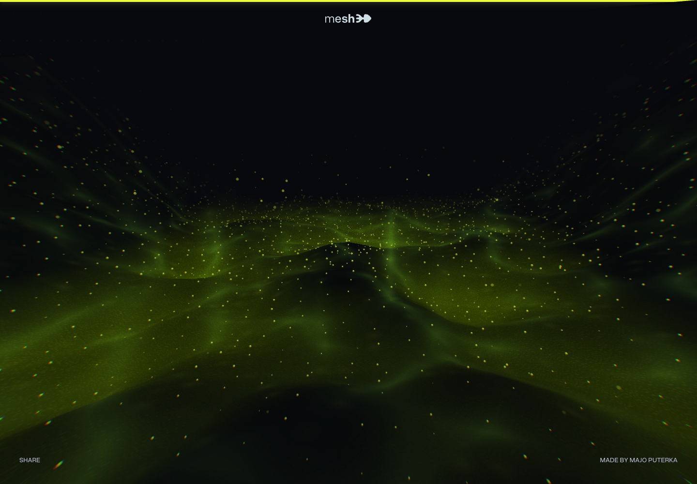

Несвязанные планы
- 5–7 evidence crops, разные scale и z
- асимметричный центр тяжести
- широкое отрицательное пространство под copy
Board фиксирует только происхождение композиции и motion-логики. Реальный ElevenHouse UI остаётся неизменяемым source of truth; маркетинговая сцена меняет лишь crop, масштаб, положение и глубину.



Spatial convergence обоснован R6; смена режима — R7; все продуктовые объекты взяты только из EH-P01/P03/P04/P05/P09. Цвет и UI anatomy не перерабатываются.
Вихрь, wormhole, частицы, сторонние logos, fake message windows, придуманный dashboard, декоративные glow-карточки и любой state, которого нет в product evidence.